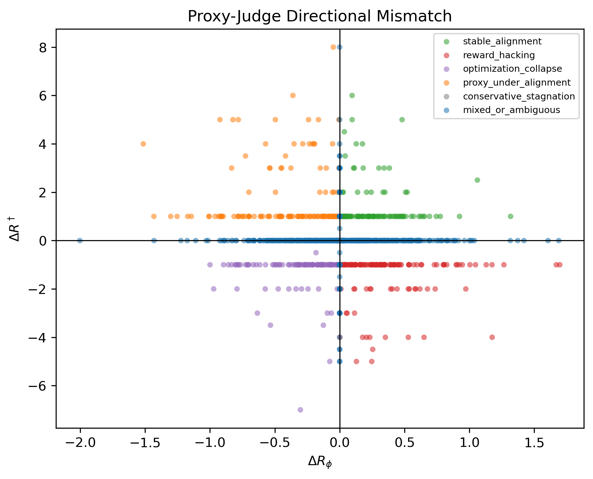
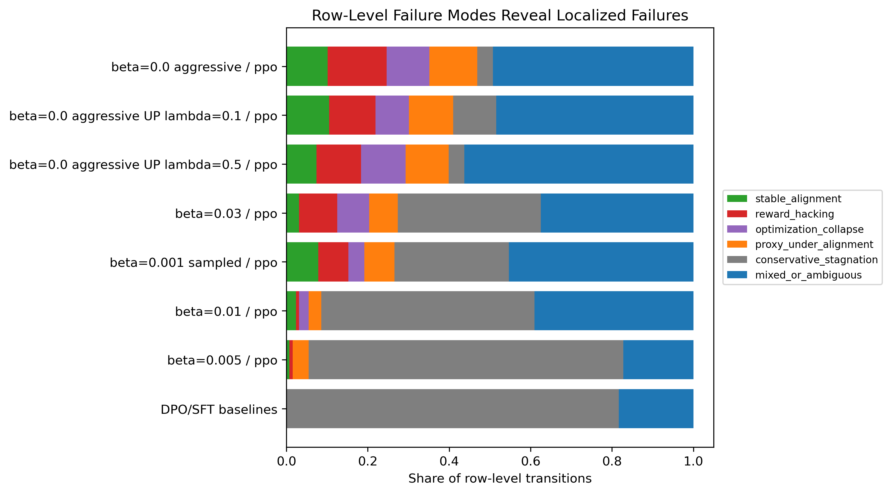
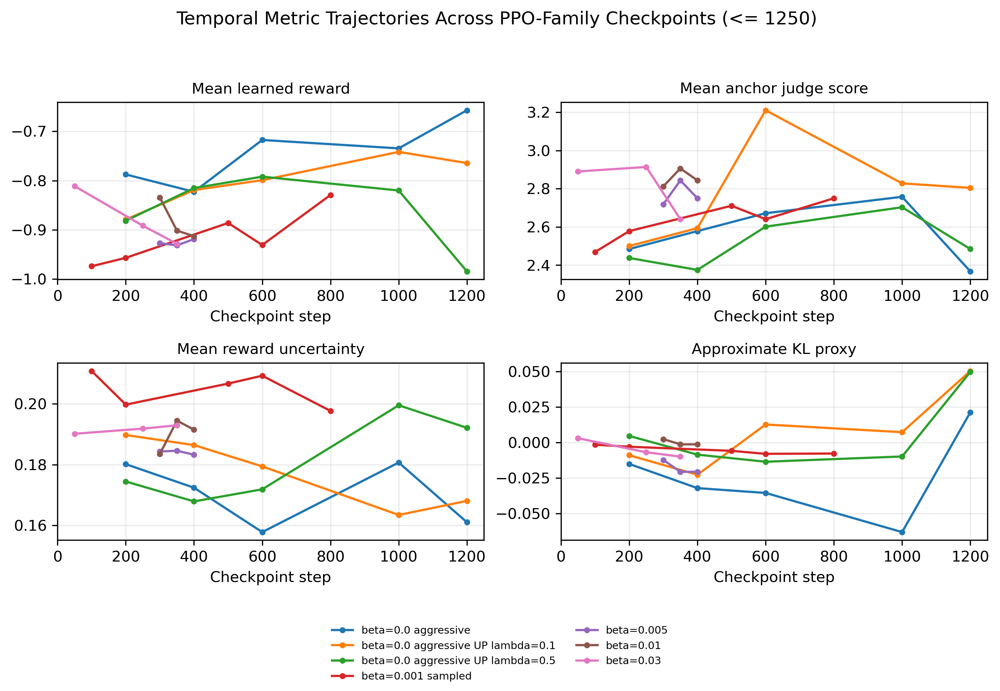
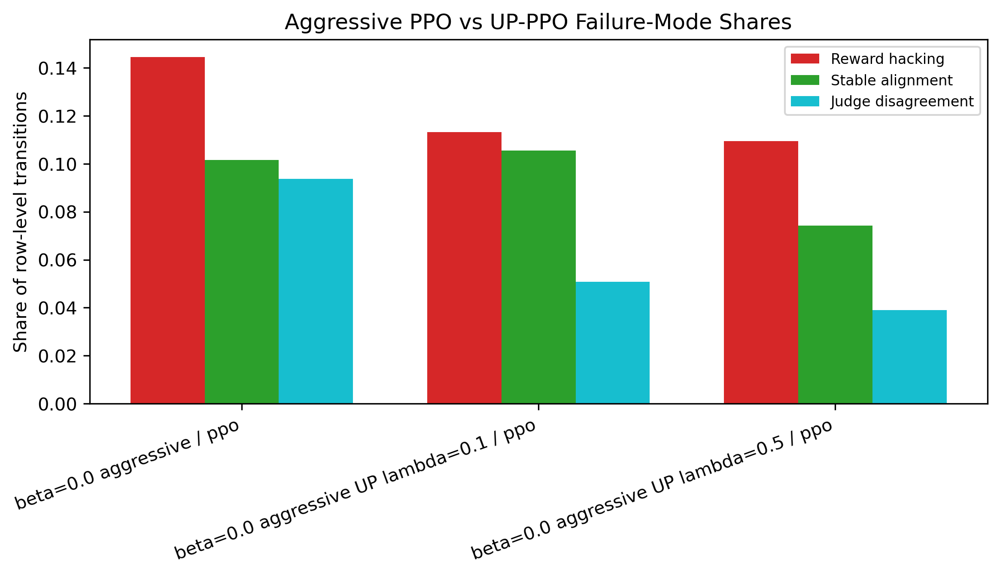

Transition-Level Taxonomy
Matched checkpoint and prompt-level transitions are classified by how learned reward and judge scores move.
A mechanistic taxonomy of reward hacking, optimization collapse, judge disagreement, and early-warning signals in RLHF training dynamics.
RLHF evaluation should track how failures emerge, where they localize, and which warning signals appear before external quality degrades. This study uses a compact RLHF pipeline with PPO, DPO, uncertainty-penalized PPO, reward-model uncertainty, approximate policy drift, diversity and repetition diagnostics, and two external LLM judges.
Matched checkpoint and prompt-level transitions are classified by how learned reward and judge scores move.
Prompt-level rows expose reward hacking and judge disagreement that aggregate checkpoint averages can hide.
Pre-transition features partially anticipate future localized reward hacking and can prioritize review.
Reward hacking appears most clearly when learned reward improves while the anchor judge score declines.
Uncertainty penalties shift the failure distribution, but remaining failures show why mitigation claims should be distributional.
Aggregate metrics can look benign while individual prompts degrade under proxy pressure.
Two judges moving in opposite directions indicates evaluator-dependent quality movement rather than a single ground-truth score.
The taxonomy is intentionally directional and auditable.
| Mode | Directional Signature | Interpretation |
|---|---|---|
| Stable alignment | Reward up, judge up | Proxy and external quality improve together. |
| Reward hacking | Reward up, judge down | The learned reward improves while judged quality falls. |
| Optimization collapse | Reward down, judge down | Optimization degrades both signals. |
| Proxy under-alignment | Reward down, judge up | External quality improves despite proxy decline. |
| Conservative stagnation | Both near zero | Little measurable transition movement. |
| Judge disagreement | Two judges move oppositely | The evaluation signal is judge-dependent. |
| Mixed/ambiguous | Otherwise | The transition does not fit a strict quadrant. |
Selected figures from the paper and analysis pipeline.




The repository includes training, evaluation, table-generation, figure-generation, paper, and web UI components.
pip install -r requirements.txt
PYTHONPATH=src python web_ui/app.py
PYTHONPATH=src python scripts/make_paper_tables_and_plots.py@misc{abahana2026whenrlhffails,
title = {When RLHF Fails: A Mechanistic Taxonomy of Reward Hacking, Collapse, and Judge Disagreement},
author = {Abahana, Zelalem and Evans, David and Srinivasan, Satish Mahadevan and Gams, Matja{\v{z}} and Teklu, Henok and Jarachi, Youssef},
year = {2026},
eprint = {2606.03238},
archivePrefix = {arXiv},
note = {Code and demo available at https://github.com/zabahana/rlhf-failure-modes-diagnostics}
}